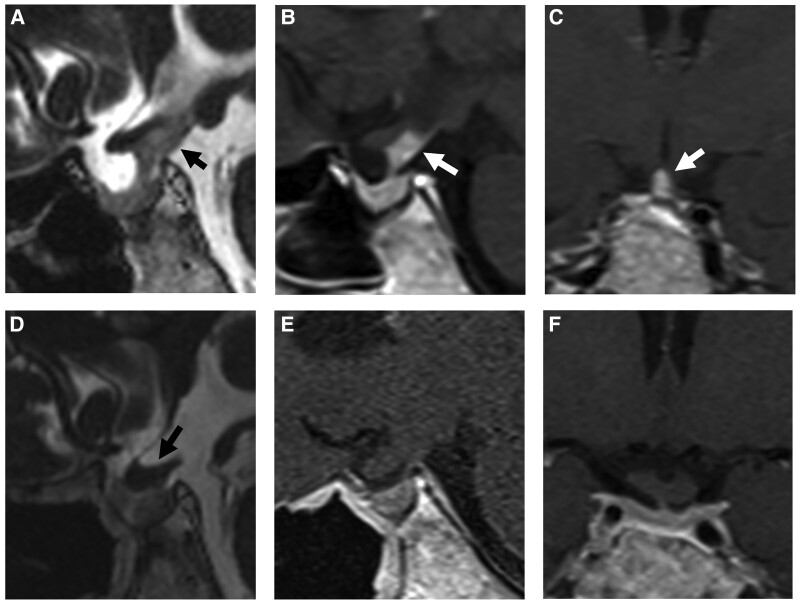
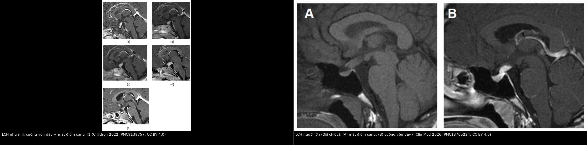
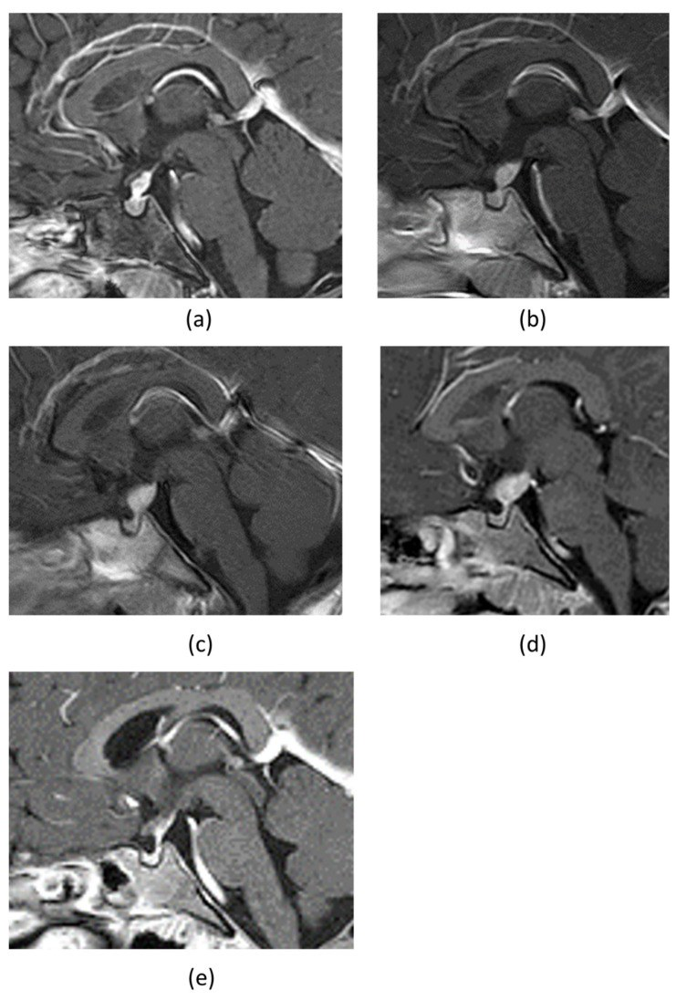
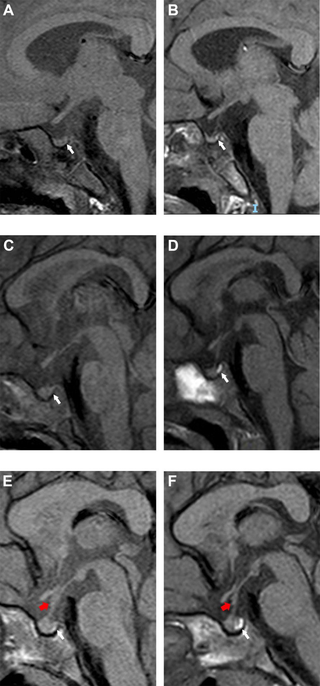
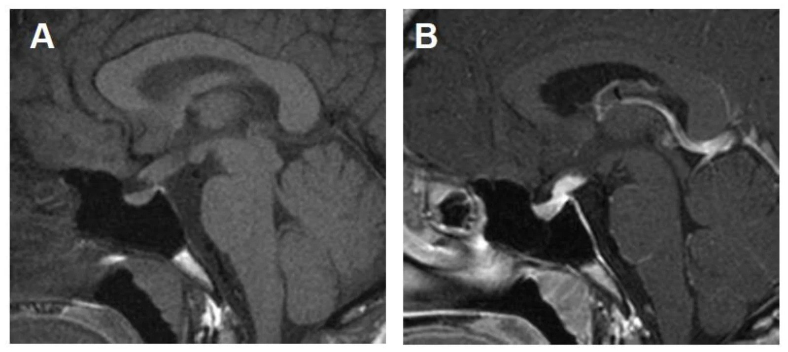

1751 — Bệnh mô bào Langerhans vùng dưới đồi–tuyến yên ở trẻ / Pediatric hypothalamic–pituitary Langerhans cell histiocytosis (LCH)
Tags: pattern:cuong-yen-day pattern:mat-diem-sang-T1 pattern:khong-vung-duoi-doi pattern:ngam-thuoc vung:tuyen-yen vung:so-yen vung:nao protocol:MRI-tuyen-yen protocol:sang-loc-noi-tiet protocol:sinh-thiet incidentaloma:khong
Mức chắc chắn (certainty): tổng hợp y văn (literature synthesis) — 1 đoàn hệ đa trung tâm về tổn thương trục dưới đồi–tuyến yên trong LCH (Pituitary 2025, PMC12474694), 1 nghiên cứu dân số về tỉ lệ mắc (Br J Haematol 2022, PMC9826274), 2 đoàn hệ cuống yên dày ở trẻ (Front Endocrinol 2022, PMC9163297; Cancers 2023, PMC10417368), 1 đoàn hệ LCH xương đơn thuần của LCH-III (Blood Adv 2026, PMC13355188), 2 nghiên cứu về LCH thoái hóa thần kinh (Haematologica 2026, PMC13136826; HemaSphere 2026, PMC13242968), 1 nghiên cứu thực hành về thuốc ức chế MAPK (Int J Cancer 2026, PMC12996742) và 4 báo cáo ca có ảnh (Children 2022, PMC9139757; OncoTargets Ther 2020, PMC7719342; JCEM Case Rep 2025, PMC11809238; J Clin Med 2026, PMC13705224). Không có ca nguyên văn do nhóm tự viết; mọi ca trong quiz đều là ca có ảnh từ bài gốc, ghi rõ PMCID.
Câu chốt: ở một trẻ đái nhiều – uống nhiều, bộ ba cần tìm trên MRI là cuống yên dày ≥ 3 mm, mất điểm sáng T1 thùy sau tuyến yên và khối vùng dưới đồi. Nhưng hình ảnh không định được nguyên nhân: u mầm, LCH và viêm tuyến yên–cuống yên tăng sinh lympho (LINH) có thể giống hệt nhau. Sai lầm chết người là cho corticoid trước khi lấy marker và trước khi có mô bệnh — corticoid làm teo cả u mầm lẫn LCH, mất dấu vết chẩn đoán; và gọi "LINH" rồi theo dõi trong khi tổn thương là u. Ngược lại, không phải ca cuống yên dày nào cũng cần sinh thiết cuống yên: ưu tiên sinh thiết tổn thương ngoài sọ (xương, da) nếu có.
1. Tổng quan bệnh học – cơ chế hình ảnh
1.1 Bệnh học và dịch tễ
- LCH là một bệnh tăng sinh tế bào tua kiểu Langerhans (Langerhans-type dendritic cells) mang đột biến đường MAPK — BRAF V600E gặp ở khoảng một nửa số ca (PMC9139757). Bệnh có thể một ổ, nhiều ổ một cơ quan hoặc nhiều cơ quan (multisystem); vì vậy chẩn đoán hình ảnh không dừng ở sọ.
- Tỉ lệ mắc ở trẻ < 15 tuổi: 4,46/1 triệu trẻ/năm (KTC 95% 3,99–4,98; Anh 2013–2019, 324/658 ca là trẻ em); sống 1 năm 99% ở trẻ (PMC9826274). Đây là bệnh hiếm nhưng không cực hiếm — mỗi trung tâm nhi lớn gặp vài ca mỗi năm.
- Vị trí nội sọ hay gặp nhất là trục dưới đồi–tuyến yên, biểu hiện sớm nhất thường là đái tháo nhạt trung ương (central diabetes insipidus, CDI). Trong đoàn hệ 48 bệnh nhân có tổn thương trục dưới đồi–tuyến yên: 69% có thiếu arginine vasopressin (AVD) ngay lúc chẩn đoán, 42% thiếu gonadotropin, 25% suy giáp trung ương, 12,5% suy thượng thận, 12% thiếu GH; MRI thấy bất thường thùy sau/cuống yên ở 73% (PMC12474694).
- Di chứng thoái hóa thần kinh (neurodegenerative LCH, ND-LCH) gặp ở 10% (63/637) bệnh nhân LCH trong sổ bộ Ý — và 60% trong số đó không có triệu chứng lúc phát hiện (PMC13136826). Đây là lý do phải theo dõi MRI não dài hạn, không chỉ MRI tuyến yên.
1.2 TẠI SAO hình ảnh lại như vậy
- Điểm sáng T1 thùy sau tuyến yên (posterior pituitary bright spot, PPBS): thùy sau chứa hạt bài tiết chứa vasopressin/oxytocin gắn neurophysin — phức hợp protein–phospholipid có thời gian T1 ngắn, nên sáng tự nhiên trên T1 không tiêm. Khi tế bào mô bào xâm nhập và phá hủy thùy sau/cuống yên, hạt bài tiết mất → mất điểm sáng, đồng thời mất khả năng cô đặc nước → đái tháo nhạt. Vì vậy mất PPBS là dấu hiệu sớm, có thể xuất hiện trước khi có khối lớn và trước khi T1 sau tiêm bất thường.
- Cuống yên dày: do thâm nhiễm tế bào mô bào + phù nề dọc trục dưới đồi–tuyến yên. Cần nhớ vùng median eminence–thùy sau không có hàng rào máu–não, nên ngấm thuốc ở cuống yên là sinh lý; yếu tố bệnh lý là độ dày, không phải "có ngấm".
- Khối vùng dưới đồi: khối tế bào + phù nề quanh u; ngấm thuốc không đồng nhất; có thể chèn ép giao thoa thị giác, gây giảm thị lực và rối loạn chức năng dưới đồi (mất khát, rối loạn điều nhiệt).
- Tổn thương ND-LCH: hình ảnh tăng tín hiệu T2/FLAIR đối xứng ở nhân răng (dentate nuclei), hạch nền, chất trắng quanh não thất, kèm teo tiểu não — bản chất là viêm–thoái hóa chất trắng và nhân xám do phản ứng miễn dịch kéo dài, không phải di căn. Vì vậy không sinh thiết các ổ này khi bệnh cảnh LCH đã rõ.
- Vì sao chẩn đoán muộn: đái nhiều – uống nhiều tiến triển âm thầm, trẻ vẫn ăn ngủ bình thường; MRI ban đầu có thể chỉ dày cuống yên 3–4 mm — dễ đọc là "giới hạn bình thường". Trong u mầm trên yên, thời gian từ MRI đầu đến điều trị có trung vị 312 ngày (PMC11246258, bài 1731); LCH cũng thường bị theo dõi "viêm" nhiều tháng trước khi sinh thiết.
1.3 Ngưỡng định lượng trụ cột
| Đại lượng | Con số | Nguồn |
|---|---|---|
| Tỉ lệ mắc LCH ở trẻ < 15 tuổi | 4,46/1 triệu trẻ/năm (3,99–4,98); sống 1 năm 99% | PMC9826274 |
| Cuống yên dày (định nghĩa dùng trong đoàn hệ nhi) | ≥ 3 mm tại chỗ bám tuyến yên và/hoặc ≥ 4 mm tại giao thoa thị giác | PMC11460958 |
| Ngưỡng cuống yên dày dự báo nguyên nhân tân sinh | ≥ 6,5 mm (cùng với CDI và ≥ 2 thiếu hụt hormone) | PMC10417368 |
| Tỉ lệ nguyên nhân tân sinh trong cuống yên dày ở trẻ | 50% (14/28) ở Hong Kong: u mầm 46%, LCH 4%; Warsaw: u mầm 73,9%, LCH 13% (3/23) | PMC10417368 · PMC9163297 |
| Trong LCH có tổn thương trục dưới đồi–tuyến yên | AVD 69%, gonadotropin 42%, TSH 25%, ACTH 12,5%; MRI bất thường thùy sau/cuống yên 73% | PMC12474694 |
| Diễn tiến trong theo dõi (trung vị 15,8 năm) | 27% phát triển AVD mới; 5 bệnh nhân thêm thiếu hụt hormone trước yên; không tử vong do bệnh | PMC12474694 |
| ND-LCH trong tổng số LCH | 10% (63/637); 60% không triệu chứng lúc chẩn đoán; MRI tiến triển 21% (trung vị 1,5 năm) | PMC13136826 |
| LCH xương đơn thuần (LCH-III, 381 ca đánh giá được) | EFS 5 năm 71%, OS 100%; tỉ lệ mắc CDI tích lũy 5 năm 5% (cao hơn khi có tổn thương xương "nguy cơ thần kinh" + nhiều ổ xương) | PMC13355188 |
| Thuốc ức chế MAPK ở LCH trẻ (thực hành thực tế, 36 trẻ) | Đáp ứng khách quan 94,4% (34/36) lúc 3 tháng; DAS trung vị 5 → 1; 13 trẻ còn ĐTĐ nhạt/xơ hóa đường mật | PMC12996742 |
| Thuốc ức chế MAPK ở ND-LCH (60 trẻ) | Cải thiện lâm sàng 55%, ổn định 39%, tiến triển 6%; MRI cải thiện 74%; biến cố bất lợi 52% (phần lớn nhẹ) | PMC13242968 |
2. Mẫu hình + chẩn đoán phân biệt theo vị trí (Gamut)
- Cuống yên dày đơn độc (kèm hoặc không kèm mất PPBS):
- Gamut: LCH · u mầm (germinoma/NGGCT) · viêm tuyến yên–cuống yên tăng sinh lympho (lymphocytic infundibuloneurohypophysitis, LINH) · bệnh Erdheim–Chester (ECD) · di căn/leukemia · lao, sarcoid · u sọ hầu (craniopharyngioma).
- Gợi nhớ LIGER: LCH · Infundibuloneurohypophysitis · Germinoma · Erdheim–Chester · Rải (di căn/leukemia).
- Mất điểm sáng T1 thùy sau tuyến yên:
- Gamut: LCH · u mầm · LINH · sau chấn thương/phẫu thuật/xạ · tuyến yên lạc chỗ bẩm sinh (ectopic posterior pituitary) — thể bẩm sinh thường kèm cuống yên đứt/mảnh tuyến yên lạc chỗ ở sàn não thất III, không có bệnh cảnh viêm tiến triển.
- Khối vùng dưới đồi – trên yên:
- Gamut: LCH · u thần kinh đệm đường thị/dưới đồi (thường NF1) · u sọ hầu · u mầm · ECD · u lympho · di căn.
- Tổn thương đối xứng hạch nền – nhân răng – chất trắng (ND-LCH):
- Gamut: ND-LCH · bệnh chất trắng do xạ trị (bài 261) · bệnh mạch nhỏ · di căn đa ổ · viêm não tự miễn.
- Chốt: tiền sử LCH + tổn thương T2/FLAIR đối xứng nhân răng/hạch nền, không choán chỗ, không ngấm → ND-LCH, không sinh thiết.

Bệnh nhân LCH người trẻ: (A) T2W sagittal, (B) T1W sau tiêm sagittal, (C) T1W sau tiêm coronal — khối vùng trên yên/dưới đồi ngấm thuốc, áp sát cuống yên và giao thoa thị giác (mũi tên); (D–F) sau điều trị bằng cytarabine, tổn thương thu nhỏ rõ. Ảnh nguyên bản, không crop (JCEM Case Rep 2025, PMC11809238, CC BY-NC-ND 4.0).3. Bảng so sánh phân biệt (ma trận đối chiếu)
| Thực thể (entity) | Hình ảnh điển hình | Chốt vào (rule-in) | Chốt loại (rule-out) | Gợi ý xác nhận |
|---|---|---|---|---|
| LCH trục dưới đồi–tuyến yên | Cuống yên dày ≥ 3 mm, mất PPBS, có thể khối dưới đồi; tổn thương xương/da/phổi ngoài sọ | Trẻ đái nhiều + cuống yên dày + tổn thương ngoài sọ (xương dạng "punched-out", ban da, nang phổi); CD1a/Langerin dương | Chỉ có cuống yên dày đơn độc, không tổn thương ngoài sọ, marker u mầm âm → vẫn chưa loại được (phải theo dõi/sinh thiết) | Sinh thiết tổn thương ngoài sọ nếu có; CD1a/CD207, BRAF V600E |
| U mầm trên yên (germinoma) | Khối đồng nhất, ngấm mạnh–đồng nhất, ADC thấp, mất PPBS; có thể hai ổ tùng + trên yên | AFP > 25 ng/mL và/hoặc hCG > 50 IU/L; CSF-PLAP ≥ 8 pg/mL; trẻ 10–19 tuổi | Marker âm + khối dị thể (nang/máu) → nghĩ NGGCT/LCH, không loại trừ u tinh bào | Marker + MRI toàn trục tủy; sinh thiết nếu marker âm (bài 1731) |
| LINH (viêm tuyến yên–cuống yên tăng sinh lympho) | Cuống yên dày đối xứng, nhẵn, mất PPBS, không có khối rời, tự thu nhỏ theo thời gian | Đái nhiều cấp + cuống yên dày nhẵn + không tổn thương ngoài sọ + tự cải thiện | Tổn thương xương/da + cuống yên dày tiến triển → LCH; khối lớn/tăng dần → u | Theo dõi MRI 3–6 tháng; không sinh thiết vội |
| U sọ hầu (craniopharyngioma) | Khối hỗn hợp đặc–nang, vôi hóa vỏ trứng, trên/dưới yên, giãn não thất | Nang + vôi hóa + trẻ 5–15 tuổi | Khối đặc, không vôi hóa, mất PPBS → LCH/u mầm | MRI + CT (vôi hóa); mô bệnh |
| U thần kinh đệm đường thị/dưới đồi | Phì đại đường thị/dưới đồi, T2 cao, ngấm thuốc ít, thường NF1 | NF1 + đường thị to + không mất PPBS | Ngấm mạnh + mất PPBS + tổn thương ngoài sọ → LCH | MRI; sinh thiết khi cần |
| Erdheim–Chester (ECD) | Cuống yên dày + mô mỡ quanh hốc mắt, xơ hóa sau phúc mạc, "hairy kidney", xương cứng | Đau xương hai bên + mô mỡ quanh thận + BRAF V600E | Chỉ tổn thương sọ, không xơ hóa tạng → LCH | Sinh thiết; CD1a âm, CD68+/CD163+ |
| Di căn/leukemia | Cuống yên dày, khối dưới đồi, nhiều ổ, tổn thương tủy xương | Bệnh máu đã biết + nhiều ổ + LDH tăng | Tổn thương đơn độc + xương "punched-out" → LCH | Tủy đồ, sinh thiết |
| Tuyến yên lạc chỗ bẩm sinh | Mất PPBS + cuống yên đứt + mảnh tuyến yên lạc chỗ ở sàn não thất III | Trẻ thấp lùn bẩm sinh, không đái nhiều tiến triển | Cuống yên dày liên tục → bệnh lý mắc phải | MRI sagittal mỏng; không sinh thiết |
| ND-LCH | T2/FLAIR tăng đối xứng nhân răng, hạch nền, chất trắng quanh não thất; teo tiểu não | Tiền sử LCH + tổn thương đối xứng, không choán chỗ, không ngấm | Tổn thương không đối xứng, ngấm thuốc, choán chỗ → di căn/u thứ phát | MRI não; không sinh thiết ổ ND-LCH |

Trái: LCH khởi phát ở nhũ nhi — chuỗi MRI sagittal T1 sau tiêm theo thời gian cho thấy cuống yên dày và mất điểm sáng thùy sau tuyến yên (Children 2022, PMC9139757, CC BY 4.0). Phải: LCH người lớn (đối chiếu) — (A) T1W không tiêm không thấy điểm sáng thùy sau, (B) sau tiêm cuống yên dày, ngấm thuốc (J Clin Med 2026, PMC13705224, CC BY 4.0). Ảnh ghép letterbox, không crop/kéo giãn.Ba dấu hiệu đọc đúng trên một phim sagittal T1
- Điểm sáng thùy sau: có/không, so với mô não xung quanh ở lát 2–3 mm không tiêm. Đừng đánh giá trên ảnh sau tiêm (thuốc làm mất tương phản sinh lý).
- Độ dày cuống yên: đo vuông góc với trục cuống, tại chỗ bám tuyến yên và sát giao thoa thị giác; ghi mm và vị trí đo — vì ngưỡng khác nhau (3 mm vs 4 mm).
- Đường bờ cuống: nhẵn, đối xứng gợi LINH/LCH sớm; gồ ghề, lệch, có nốt rời gợi u mầm/di căn.
4. Protocol chụp + hệ phân độ/điểm chuẩn hóa
4.1 MRI — chuỗi xung tối thiểu
- MRI sọ + vùng tuyến yên, không và có gadolinium:
- T1W sagittal không tiêm, lát 2–3 mm qua tuyến yên–cuống yên: bắt buộc để đánh giá PPBS;
- T1W sau tiêm sagittal + coronal lát 2–3 mm; T2W; FLAIR; DWI/ADC (không đặc hiệu, nhưng giúp loại nhồi máu/áp-xe);
- MRI toàn trục tủy khi nghi u mầm (bài 1731) — không cần thường quy cho LCH đã có mô bệnh.
- Đánh giá toàn thân (vì LCH là bệnh hệ thống): PET/CT toàn thân hoặc xương đồ + CT ngực; trong đoàn hệ HEROS, 46% có tổn thương xương và 42% có tổn thương phổi lúc chẩn đoán (PMC12474694).
- Theo dõi: MRI sọ–tuyến yên 3–6 tháng/lần trong 2 năm đầu, sau đó thưa dần; MRI não để phát hiện ND-LCH (nhân răng, hạch nền, chất trắng).
4.2 Xét nghiệm trước và sau MRI
- Trước mọi can thiệp: AFP, hCG (huyết thanh + dịch não tủy) — loại u mầm; tế bào học dịch não tủy; CSF-PLAP nếu có.
- Chẩn đoán ĐTĐ nhạt: Na máu, osmolality máu/niệu, nghiệm pháp nhịn nước + desmopressin; không chẩn đoán chỉ bằng "uống nhiều".
- Trục trước yên: IGF-1, FT4/TSH, cortisol sáng/ACTH, LH/FSH, prolactin; đánh giá dậy thì sớm (trong LCH có thể do kích thích trục gonadotropin).
4.3 Chẩn đoán mô bệnh — nguyên tắc "không sinh thiết cuống yên nếu còn lựa chọn"
- Sinh thiết tổn thương ngoài sọ (xương, da, hạch) là lựa chọn đầu: trong HEROS, chẩn đoán mô bệnh được xác nhận ở tất cả bệnh nhân, chủ yếu từ tổn thương ngoài tuyến yên; chỉ 5 ca sinh thiết qua đường sọ và 2 ca qua xoang bướm (PMC12474694).
- Sinh thiết cuống yên chỉ khi tổn thương khu trú đơn độc và tiến triển, sau khi đã loại u mầm bằng marker; ca nhũ nhi trong PMC9139757 được sinh thiết cuống yên vì tổn thương đơn độc, lớn dần trong 1 năm.
- Hóa mô miễn dịch: CD1a, Langerin (CD207), CD68, S100; BRAF V600E (IHC/PCR) — vừa chẩn đoán, vừa mở đường điều trị đích.
4.4 Điều trị (khung thực hành)
- Tuyến đầu: vinblastine + prednisolone theo phác đồ LCH-III/IV; ở LCH xương đơn thuần điều trị V-P 6 tháng, đáp ứng sớm lúc tuần 6 là 83%, EFS 5 năm 71% (PMC13355188).
- Tái phát/khó trị: cladribine (2-CdA) — ca nhũ nhi PMC9139757 có cuống yên thu nhỏ nhanh sau 2-CdA; ca người lớn PMC13705224 giảm khối và phù nhưng ức chế tủy độ 4 buộc ngừng.
- BRAF V600E dương/khó trị: dabrafenib 2 mg/kg mỗi 12 giờ (± trametinib) — 3 trẻ trong PMC7719342 điểm sáng T1 thùy sau xuất hiện lại sau 1 và 3 tháng điều trị; thực hành thực tế 36 trẻ cho đáp ứng 94,4% lúc 3 tháng (PMC12996742).
- ND-LCH: thuốc ức chế MAPK cho cải thiện MRI 74%, lâm sàng 55% (PMC13242968); không dùng xạ trị như liệu pháp đầu cho tổn thương ND-LCH.
flowchart TD
A[Trẻ đái nhiều - uống nhiều<br/>hoặc thấp lùn - dậy thì sớm] --> B[MRI sọ + tuyến yên<br/>T1 sagittal 2-3 mm KHÔNG tiêm: PPBS]
B --> C{Cuống yên dày >= 3 mm<br/>hoặc mất PPBS?}
C -->|Không| D[Theo dõi lâm sàng<br/>lặp MRI nếu triệu chứng tiếp diễn]
C -->|Có| E[AFP + hCG máu và DNT<br/>tế bào học DNT + CSF-PLAP]
E --> F{Marker dương?}
F -->|Có| G[U mầm: điều trị theo 1731<br/>KHÔNG sinh thiết]
F -->|Không| H{Có tổn thương ngoài sọ<br/>xương - da - phổi?}
H -->|Có| I[Sinh thiết tổn thương ngoài sọ<br/>CD1a - Langerin - BRAF V600E]
H -->|Không| J[Sinh thiết cuống yên<br/>chỉ khi tổn thương đơn độc và tiến triển]
I --> K[LCH: staging toàn thân<br/>PET/CT hoặc xương đồ + CT ngực]
J --> K
K --> L{Thể bệnh}
L -->|Khu trú| M[Vinblastine + prednisolone<br/>hoặc theo dõi nếu xương đơn ổ]
L -->|Đa cơ quan / khó trị| N[2-CdA hoặc thuốc ức chế MAPK<br/>dabrafenib 2 mg/kg q12h]
M --> O[Theo dõi MRI 3-6 tháng<br/>nội tiết hằng năm - ĐTĐ nhạt thường tồn tại]
N --> O
5. Biến thể bình thường và cạm bẫy
- "Mất điểm sáng T1 = LCH" là sai. Mất PPBS còn gặp ở u mầm, LINH, sau chấn thương/phẫu thuật, và tuyến yên lạc chỗ bẩm sinh; một số người không bệnh cũng có thể mất (tỉ lệ chính xác chưa rõ — cần tra). Luôn đọc cùng độ dày cuống yên + bệnh cảnh.
- Cuống yên < 3 mm không loại trừ LCH sớm. Tổn thương có thể khởi đầu chỉ 2–3 mm; nếu trẻ đái nhiều thật sự, lặp MRI 3–6 tháng thay vì kết luận "vô căn".
- Corticoid trước marker/mô bệnh: làm teo u mầm và LCH, mất mô để chẩn đoán, âm tính giả marker. Chỉ dùng khi có tăng áp lực nội sọ nguy hiểm và đã lấy máu/DNT.
- Sinh thiết cuống yên không phải "xét nghiệm đầu tay": nguy cơ tổn thương trục dưới đồi, tỉ lệ lấy được mô chẩn đoán thấp; ưu tiên tổn thương ngoài sọ. Trong HEROS, chẩn đoán chủ yếu từ xương/da/phổi (PMC12474694).
- Gọi "LINH" quá sớm: LINH là chẩn đoán loại trừ + theo dõi; nếu tổn thương tăng dần hoặc xuất hiện tổn thương ngoài sọ, phải sinh thiết lại — đã có ca u mầm bị chẩn đoán nhầm là LINH/LCH (PMC10417368).
- ĐTĐ nhạt do LCH thường KHÔNG hồi phục: trong đoàn hệ HP-LCH, 27% phát triển AVD mới trong theo dõi và đa số vẫn còn AVD (PMC12474694); ngoại lệ là trẻ được điều trị đích trước khi có ĐTĐ lâm sàng — 3 ca PMC7719342 điểm sáng T1 trở lại. Do đó không hứa "khỏi ĐTĐ" và không ngừng desmopressin theo MRI.
- ĐTĐ nhạt kèm mất khát (adipsic DI) là cạm bẫy chết người: tổn thương dưới đồi làm mất cảm giác khát → trẻ không uống bù, có thể tăng Na máu nặng; ca báo cáo có Na 170 mEq/L và tử vong do ngừng tim (PMC13705224). Không dựa vào "trẻ có uống nhiều" để đánh giá an toàn.
- ND-LCH bị đọc là di căn: tổn thương đối xứng nhân răng/hạch nền, không choán chỗ, không ngấm, thường không triệu chứng (60%) — không sinh thiết, không đổi phác đồ vì "di căn" (PMC13136826).
- Ngấm thuốc cuống yên là sinh lý: vùng không có hàng rào máu–não; đừng gọi "viêm" chỉ vì cuống yên ngấm thuốc.
6. Tự lượng giá — Blind Quiz ngay trên trang tĩnh
Ca 1 — Bé gái 2 tuổi 9 tháng, đái nhiều – uống nhiều khởi phát đột ngột. MRI sọ sagittal T1 sau tiêm theo thời gian.

- Gợi ý lâm sàng: trẻ nhỏ, đái nhiều – uống nhiều, không tổn thương ngoài sọ rõ.
- Câu hỏi: Cuống yên có dày không? Điểm sáng thùy sau tuyến yên còn không? Ba chẩn đoán phân biệt và bước tiếp theo?
Bấm để hiện đáp án (findings + chẩn đoán)
- Cuống yên dày, ngấm thuốc và mất điểm sáng T1 thùy sau tuyến yên; tổn thương lớn dần qua các lần chụp (a → e).
- Chẩn đoán: LCH khu trú vùng thần kinh–tuyến yên — được xác nhận bằng sinh thiết cuống yên (CD1a/Langerin dương); BRAF V600E âm trong ca này.
- Phân biệt: u mầm, LINH; cần AFP/hCG máu + DNT trước khi sinh thiết.
- Điều trị trong ca: desmopressin uống cho ĐTĐ nhạt; 2-CdA làm cuống yên thu nhỏ nhanh.
- Nguồn ảnh: Children 2022, Fig. 1 — PMC9139757, CC BY 4.0.
Ca 2 — Ba trẻ có LCH đa cơ quan mang BRAF V600E, tổn thương tuyến yên. So sánh MRI sagittal T1 trước và sau điều trị đích.

- Câu hỏi: Dấu hiệu nào cho thấy tuyến yên bị tổn thương? Sau điều trị đích, dấu hiệu nào thay đổi? Điều đó nói gì về "cửa sổ" điều trị?
Bấm để hiện đáp án (findings + chẩn đoán)
- (A, C) Mất điểm sáng T1 thùy sau tuyến yên; (E) điểm sáng giảm + cuống yên dày (mũi tên đỏ).
- Sau dabrafenib 2 mg/kg mỗi 12 giờ: (B) điểm sáng xuất hiện lại sau 3 tháng; (D) sau 1 tháng; (F) tổn thương cải thiện.
- Ý nghĩa: tổn thương tuyến yên do LCH có thể hồi phục về hình ảnh nếu điều trị trước khi ĐTĐ lâm sàng; nhưng vẫn có thể tái phát sau khi ngừng thuốc (bài báo nêu ca tái phát khi còn cfBRAF V600E dương).
- Nguồn ảnh: OncoTargets Ther 2020, Fig. 1 — PMC7719342, CC BY-NC 4.0 (nguyên bản, không chỉnh sửa).
Ca 3 — Bệnh nhân LCH có ĐTĐ nhạt, sau đó mất khát và rối loạn điều nhiệt; MRI sọ có khối vùng dưới đồi 25 mm.

- Câu hỏi: (A) và (B) cho thấy gì? Vì sao "mất khát" lại nguy hiểm hơn "đái nhiều"?
Bấm để hiện đáp án (findings + chẩn đoán)
- (A) T1W không tiêm: mất điểm sáng thùy sau tuyến yên; (B) sau tiêm: cuống yên dày/khối vùng dưới đồi ngấm thuốc.
- Chẩn đoán: LCH vùng dưới đồi–tuyến yên có hội chứng dưới đồi (ĐTĐ nhạt kèm mất khát).
- Vì sao nguy hiểm: mất khát → trẻ không uống bù dù mất nước; ca này Na 170 mEq/L, tử vong do ngừng tim do mất nước. Phải theo dõi Na và cân nặng, không chỉ dựa vào triệu chứng khát.
- Nguồn ảnh: J Clin Med 2026, Fig. 3 — PMC13705224, CC BY 4.0.
Bài liên quan chéo
- 600 – Tổng quan Hệ Nhi khoa
- 1731 – U mầm nội sọ vùng trên yên ở trẻ (đối thủ số 1 của cuống yên dày ở trẻ)
- 1644 – Đái tháo nhạt trung ương ở trẻ
- 432 – Vùng yên–giao thoa: adenoma vs đột quỵ tuyến yên
- 261 – Bệnh não chất trắng do xạ trị (DDx của ND-LCH)
- 1710 – Đái tháo nhạt trung ương sau mổ tuyến yên (DDx mất điểm sáng T1 sau can thiệp)
Ảnh
1751_lch-cuong-yen_MRI_PMC9139757-F1.jpg— LCH nhũ nhi: cuống yên dày + mất điểm sáng T1 (5 lát theo thời gian).1751_lch-bright-spot_MRI_PMC7719342-F1.jpg— 3 trẻ BRAF V600E+: mất điểm sáng T1 và hồi phục sau dabrafenib.1751_lch-vung-duoi-doi_MRI_PMC11809238-F1.jpg— khối vùng dưới đồi ngấm thuốc, thu nhỏ sau cytarabine.1751_lch-mat-bright-spot_MRI_PMC13705224-F3.jpg— người lớn (đối chiếu): mất điểm sáng + cuống yên dày.composite_lch_brightspot_stalk.jpg— ảnh ghép 2 ô từ nguồn CC BY 4.0, tạo bằngtools/make_composite.py.- Nguồn + giấy phép từng ảnh: xem
images/CREDITS.mdvàsources.md.
Không dùng để chẩn đoán độc lập khi chưa có người hướng dẫn.